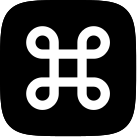

统一网关 · 统一路由 · 统一终端
一个网关，
统一你的 AI 开发栈。
Claude Code、Codex、Gemini CLI 各说各的协议。PHI 在中间转换，供应商只配一次；直连还是走路由组，规则由你定，终端就开在同一个窗口。
macOS · Windows · Linux/开源，MIT 许可
协议的事，交给中间那层。
Claude Code 说 Anthropic Messages，Codex 说 OpenAI Responses，Gemini CLI 说 Gemini 原生；供应商那边可能是另一种。PHI 在中间识别、直通或转换，应用不必为每家供应商各接一次。第五种是 System One，按问题和答案组织的决策协议，正在接入。
- Anthropic Messages
- OpenAI Responses
- OpenAI Chat
- Gemini 原生
- System One即将支持
直通或互转
流式输出
- Anthropic Messages
- OpenAI Responses
- OpenAI Chat
- Gemini 原生
- System One即将支持
同协议直通
两边说同一种协议时按原样转发，流式、工具调用和用量字段不被重写。
跨协议转换
请求、响应和流式事件按目标协议转换；工具调用、思考内容和 Token 用量尽量保留。
四种聊天协议
OpenAI Chat Completions、OpenAI Responses、Anthropic Messages、Gemini 原生。入口和上游各选一种，不必相同。
System One（即将支持）
决策协议：请求里带状态和一组问题，回复是结构化的答案与概率。它只走自己的中转，不会被当成聊天请求改写。
System One 还在接入，发布后会出现在供应商的协议列表里。跨协议接入前，建议先用一个简单任务确认工具调用和流式输出；Gemini CLI 目前只接受 Gemini 原生上游。
你常用的应用，已经在里面。
十七个应用，一份配置。接管原有配置或与它共存，都走同一套供应商和路由。
 Claude
Claude- Claude Desktop
 Codex
Codex Gemini
Gemini Grok Build
Grok Build OpenCode
OpenCode OpenClaw
OpenClaw Hermes
Hermes Pi
Pi MiniMax Code
MiniMax Code
Command Code- Crush
- Droid
- Kimi Code
- AtomCode
- OmO
- System One
System One 还在接入，其余十六个应用现在就能用。
直连很干脆，路由组更扛事。
每个应用可以固定连一个供应商，也可以把供应商、模型放进路由组，让 PHI 按策略挑。组内成员不必同协议、同模型，网关会在转发时转换。
 PHI
17 个应用
PHI
17 个应用
- 浅灰虚线 · 配置拓扑
- 实线 · 完成
- 虚线 · 失败
- 点状 · 结果未确认
- 颜色 · 按应用
-
一张图，两层信息
浅灰虚线是配置好的拓扑，一直在；彩色的线是最近一次请求，只留最新的那一条。不用在配置页和日志页之间来回对照。
-
线型说明结果
颜色跟着应用走，线型说明状态：实线完成，虚线失败，点状是结果未确认。请求还在跑时，线会流动。
-
图也是入口
点应用设它的路由，点路由组改成员和策略，也可以直接新建组。成员是供应商或模型，组只有一层。
终端就开在这个窗口里。
应用页右上角点「＋」，或者按一下 ⌘T，选个目录就能启动。PHI 会先确认本机的 CLI 装好没有。Claude Code、Codex、Gemini CLI 等 9 个应用都能这样打开，配好的供应商和路由组一起生效。 目前仅 macOS 13+ 可用；未安装的 CLI 会显示安装提示。
-
配置和终端，各占一格标签
在同一个应用里切换，改完供应商不用另开窗口跑命令。
-
需要对照，就左右分屏
同一工具的两个会话并排放：一边改代码，一边看结果。也可以上下分屏。
-
配色跟着你走
跟随 PHI 的浅色或深色，也可以从几套内置配色里挑。
-
切走了，它还在跑
去别的页面看用量、改配置，进程不会被打断。
-
CLI 退出，也不黑屏
回到同一个 shell，工作目录和刚才的输出都还在。
~/code/phi
$ claude
在选定的项目目录中启动 CLI
> 先看看项目，再帮我补上这段功能
换工具可以，会话不用搬家。
PHI 已经把各工具留在本机的会话记录收进一个列表：按项目分组、搜索、打开原文，或复制恢复命令。接下来要把跨工具的上下文和长期记忆接起来：你在这个项目里说过的事，不必每次从头再说。
在 Claude Code 里开的头，换到 Codex 也能接着做。
跨工具上下文与长期记忆仍在规划中；现有会话浏览只读取各工具自己保存在本机的记录。
配置、用量、数据，
都收在同一处。
供应商、MCP、Skills 和提示词放在一处管理，再按工具支持的方式写进配置。网关、路由组和终端里的 CLI 都读同一份。
- 供应商与密钥
- 多家供应商、多个模型放在一起，切换点一下。订阅类登录凭据交给系统钥匙串。
- MCP 与 Skills
- 统一的服务器与技能列表，装到哪些应用、有没有生效，一眼能对上。
- 提示词
- 常用提示词存成一份库，随时复制，或写进项目配置。
- 用量账本
- 请求经过本地网关，会话数、Token、费用、缓存命中和活跃时长都记进本地账本。按天看趋势，或者用星期 × 小时的热力图，找出自己用得最多的时段。
- 本地数据
- PHI 没有项目方的云端后端：配置、会话统计和用量账本都在本机的
~/.phi/里，订阅类 OAuth Token 交给系统钥匙串。用在线模型时，CLI 或本地网关才会连接你选择的供应商。
从你熟悉的应用开始。
不用一次配好所有东西。先连通一个应用，再慢慢整理自己的工作台。
装好 PHI 和你要用的 CLI
PHI 管理和启动应用，CLI 仍按各自的官方说明安装；已经装好的可以直接用。
添加供应商，选好连接方式
填好模型服务，在「路由」页决定直连还是加入路由组；需要时给组挑一个策略。
打开项目，开始做事
在应用页点「＋」选个目录，macOS 13+ 可以就地开终端；或者在你常用的终端里打开项目。
下载前，再说清几件事。
PHI 自带模型或免费额度吗？
PHI 是开源桌面工具，不提供模型额度。你需要自行准备供应商的 API Key 或对应应用支持的订阅账号；模型费用由所选服务商收取。
直连和路由组有什么区别？
直连不经过网关，应用按原来的方式连一个供应商。路由组把几个供应商或模型放在一起，由 PHI 按策略挑，失败时换下一条；组内可以是不同协议。
我的密钥和请求会经过哪里？
主要配置与用量数据保存在本机，订阅类 OAuth Token 存入系统钥匙串。走本地网关时，请求先到 PHI，再转给你配置的供应商；直连时由应用直接连接供应商。两种方式下，请求内容和必要凭据都会交给你选择的供应商。
会话和长期记忆现在能用吗？
会话浏览能用：各工具留在本机的记录会收进一个列表，按项目或时间查看、搜索并复制恢复命令。跨工具的连续会话和长期记忆仍在规划中。
Windows 和 Linux 也能在应用内运行 CLI 吗？
内嵌终端目前仅适用于 macOS 13 及以上。Windows 和 Linux 可以用 PHI 管理配置、连接模型和查看用量，CLI 在外部终端运行。
如何更新和反馈问题？
在应用内选择「检查更新」，或到 GitHub Releases 获取新版本。遇到问题可以在 GitHub Issues 反馈，附上系统版本、工具名称和复现步骤，记得隐去密钥。
选一个平台，装上就能用。
版本、架构和可下载文件以 GitHub Releases 为准。
以上入口都前往发布页，不会自动开始下载。也可以从源码构建